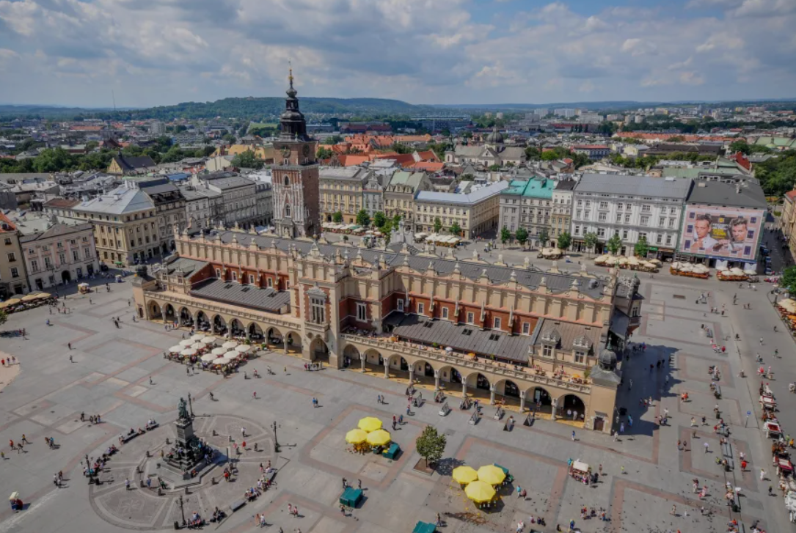
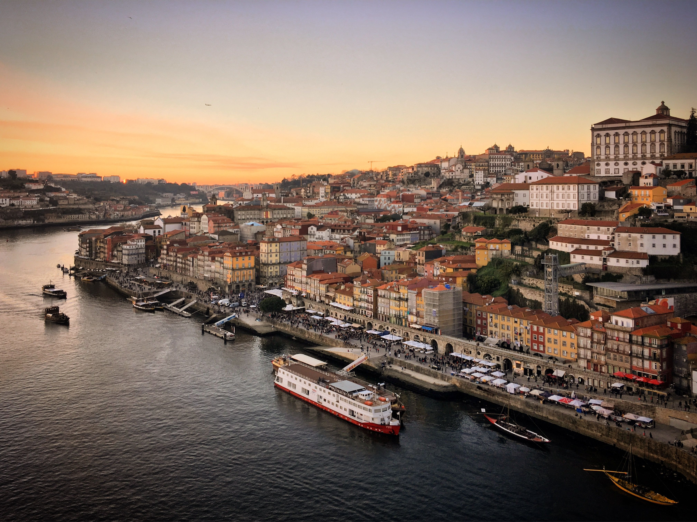
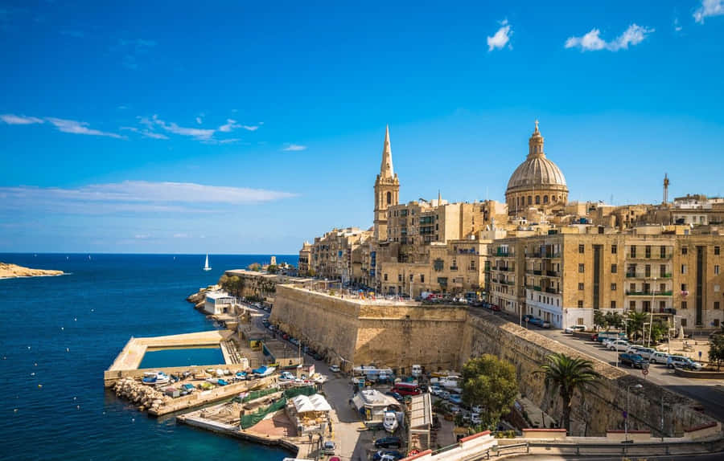

Polonia es un país ubicado en Europa Central, limitando al norte con el Mar Báltico, al este con Lituania, Bielorrusia y Ucrania, al sur con Eslovaquia y la República Checa, y al oeste con Alemania. Con una población de aproximadamente 38 millones de habitantes, es uno de los países más grandes de la región, tanto en términos de territorio como de población.

El viejo Oporto es un lugar que se siente más que se visita: un casco histórico compacto, lleno de historia, miradores , azulejos y un ambiente ribereño que deja huella. Perfecto para perderse sin prisa y dejarse llevar por su aire nostálgico.

Malta es un país insular ubicado en el corazón del Mediterráneo, entre Italia y Libia. Con una rica historia que abarca desde la prehistoria hasta la época moderna, Malta ofrece una mezcla única de cultura, arquitectura y paisajes impresionantes.